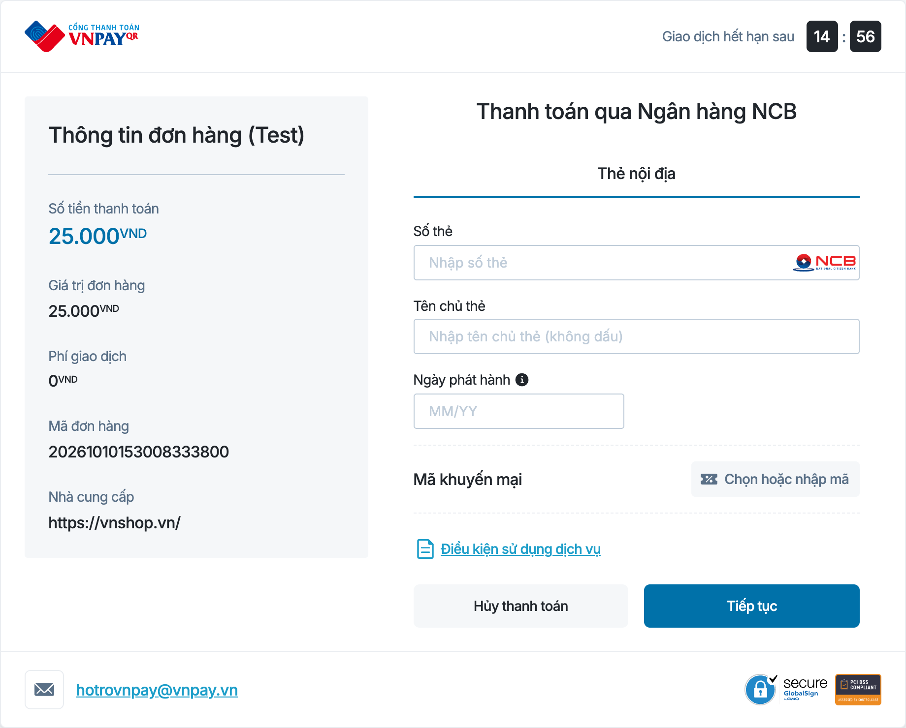

VNPAY đọc từ query string: số tiền 25.000 VND (vnp_Amount = 2500000), mã đơn (vnp_TxnRef), ngân hàng NCB (vnp_BankCode)
- Đồng hồ đếm ngược 15 phút lấy từ vnp_ExpireDate
- Trang nhập thẻ thuộc VNPAY, Payment Service không nhận số thẻ
- Bấm Thanh toán xong, VNPAY gọi IPN và đưa khách về vnp_ReturnUrl